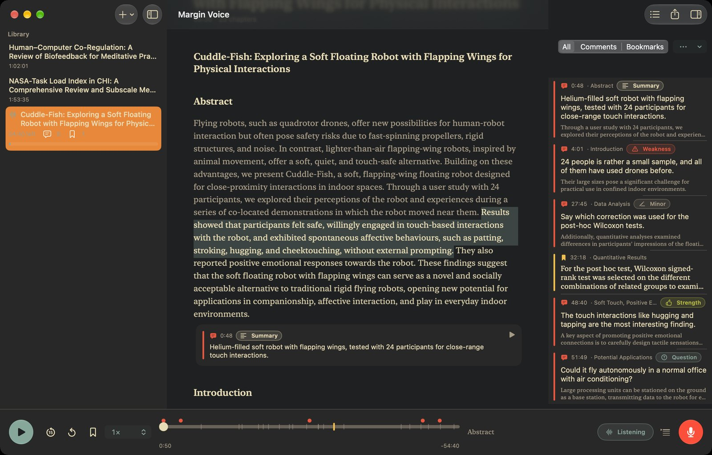

Margin Voice
Review papers by listening. Margin Voice reads a paper to you. When something strikes you, say “stop”, speak your comment and say “continue”. The comment is filed on the sentence you just heard.
Android Beta
Android 13 or newer on a 64-bit phone. Tested on a Pixel 6 Pro. The download is about 107 MB.
On Android 11 or 12? Use the Android 11 test build: there, comments are transcribed by the app’s built-in recognizer, which is rougher than Android’s own, and headset microphones are less tested.
Checksums and every version are on the releases page. How to install
iPhone, iPad and Mac TestFlight
iOS 26 and macOS 26; the Mac app needs Apple silicon. One app covers all three devices, first through TestFlight, then on the App Store.
TestFlight is Apple’s app for beta versions. Open the link on the iPhone, iPad or Mac to join.
How it works
“Weakness” is the first word of the comment, so the comment is tagged with it.
Turn a paper into an audiobook
Pick a PDF, Markdown, RTF or text file. Margin Voice finds the sections, makes them chapters and narrates the text on the device. Android and iPhone use the device’s own voice; the Mac uses natural neural voices that run on the Mac. A book made on one device opens on the others as a .drafttalk file, like the sample paper.
Listen, or read along
The sentence being read is highlighted. Listen with headphones on a walk, or read along at the desk.
Say “stop” and speak
A beep starts the recording. The comment is placed 1.5 seconds before you said “stop”, about the time it takes to react to what you heard. Say “continue” and the book plays on from 2 seconds before where it stopped. Both times can be changed in Settings.
Tag it as you speak
Start the comment with a review word and it is filed under that heading:
Take it back to the paper
Export a review draft sorted by tag, your comments as Markdown, CSV or JSON, or the paper’s PDF with a highlight and a note on every commented sentence.
On Android


On iPhone, iPad and Mac
The same app runs on all three. On the Mac, the whole paper sits in one window with your notes beside it, and PDFs dropped onto the window are converted. With sync on, books and comments follow you through iCloud Drive.

What you can say
A headset works too: the next-track button starts a comment, and the previous-track button discards it.
Private by design
Voice commands and transcription run on the device. There is no account, no analytics and no tracking. Sync stays off until you turn it on. It then goes to storage you choose: iCloud Drive between Apple devices, or your own Nextcloud or WebDAV server, which Android reaches too. Privacy policy.
Install the Android beta
- Open this page on the phone and tap Download APK (on Android 11 or 12: the Android 11 test build).
- Open the downloaded file. Android asks once to allow installs from your browser: allow it, then tap Install.
- Open Margin Voice and tap Try a Sample Paper. Three narrated papers are there to download, each with its PDF. To use your own paper: Library › menu › Convert Document…
- A new version installs the same way, over the old one, and keeps your books and comments.
This is a beta
- The Android app is tested on a Pixel 6 Pro, the Android 11 build only on an emulator so far. Other phones’ microphones and Bluetooth may behave differently.
- Over the speaker, the book’s own voice or people talking nearby can trigger a command. Headphones help.
- Natural neural voices for converting papers on Android are in progress; for now the phone’s voice reads them.
- Found a problem or have an idea? Open an issue on GitHub.